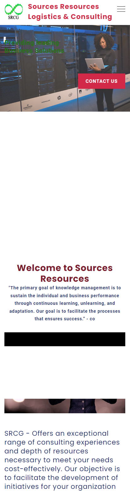
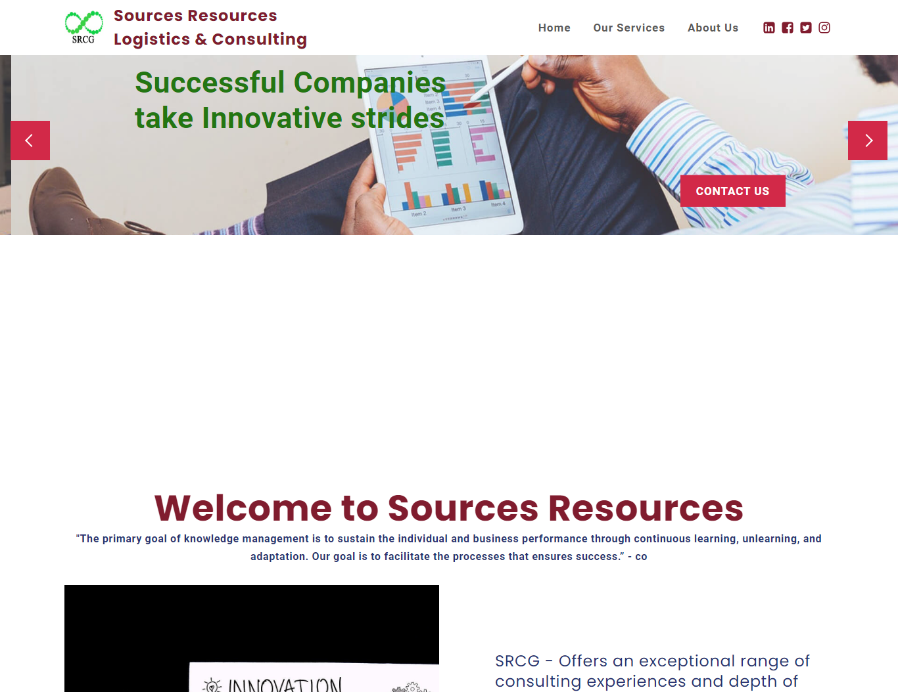
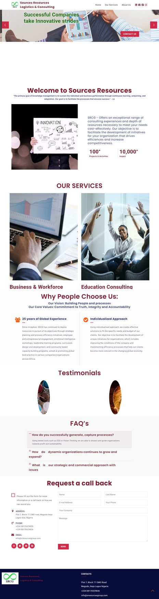
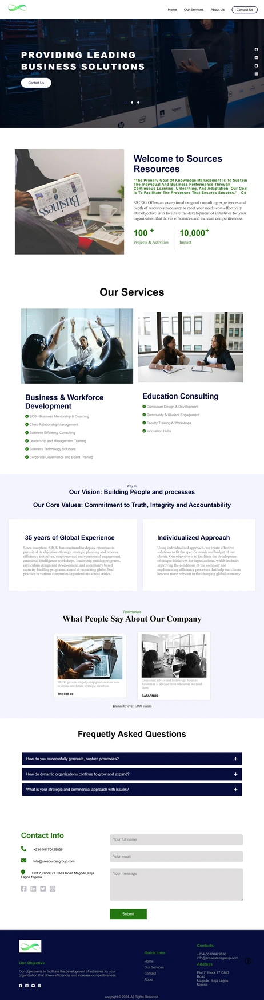

SCRG Web redesign*
This freelance redesign project focused on improving the user experience of a strategic business consulting firm’s website. The existing design suffered from inconsistent layouts, unclear information hierarchy, and low mobile usability. My goal was to create a responsive, user-friendly site that clearly communicates services, builds trust, and encourages user engagement.
TOOLS: Html5, CSS3, Javascript
UX/Web Design
Timeline: 4 weeks (May 2024)
About this project
This consulting firm’s website had strong content but poor usability and outdated aesthetics. A redesign presented the opportunity to make the brand feel trustworthy, professional, and accessible to new clients—especially on mobile.
Why a Redesign?
The existing website suffered from poor design principles- cluttered layouts, inconsistent alignment, and scattered imagery that failed to represent the organization’s professionalism. The visual identity didn’t match the brand’s credibility or purpose, and users struggled to navigate or understand the core services. A redesign was necessary to create a more cohesive, user-centered experience that is engaging.
Constraints
As a solo designer working on a freelance project, the redesign was completed within a limited timeframe and without access to real user data or analytics. The process relied on publicly available information, heuristic evaluation, and assumptions based on light research. Despite these limitations, the goal remained to deliver a professional and functional redesign that aligns with sound UX.
Opportunities
This project presented the opportunity to redefine the website’s visual identity and improve its usability. By focusing on clearer navigation, a consistent layout, and purposeful imagery, the redesign could strengthen the organization’s credibility and engagement with its audience. It was also a chance to modernize the site’s interface and ensure a responsive experience across all devices.
Analysis and Redesign of Sources Resources Website
Sources Resources Logistics and Consulting (SCRG), a Lagos-based business consulting firm, provides strategic support and logistics solutions for organizations across various sectors. However, the company’s current website lacks visual hierarchy, consistent alignment, and clear navigation, making it difficult for visitors to understand its services and core values. The scattered placement of images and text creates a disjointed user experience that fails to reflect the professionalism of the organization. This analysis explores how user-centered design principles can be applied to redesign the website, focusing on improving layout consistency, simplifying navigation, and visually communicating SCRG’s credibility and expertise to potential clients


Problems Identified:
- -Difficult navigation and unclear service structure
- -Limited responsiveness on mobile devices
- -Outdated design that reduced credibility
- -Unclear calls to action (users didn’t know what to do next)
User 1
Name: Chiamaka Eze
Age: 27
Occupation:Small Business Owner / Startup Founder
Location:Abuja, Nigeria
Background:Chiamaka recently launched a small logistics support business and is looking for professional guidance to structure her operations. She explores consulting websites to learn about services, gather insights, and possibly enroll in workshops or strategy sessions.
Goals:
To understand what types of consulting or training services SCRG offers.
To learn how SCRG can help small businesses grow and operate efficiently.
To easily find contact details or inquiry forms to request more information.
Motivations:
Wants a consulting partner that feels approachable and supportive.
Drawn to clean visuals, simplified language, and success stories from similar clients.
Appreciates websites that make it easy to explore options and reach out.
User 2
Name: Tunde Adebayo
Age: 28
Occupation:Operations Manager at a mid-sized logistics company
Location:Lagos, Nigeria
Background:Tunde manages logistics operations and often partners with external consultants to streamline processes and improve efficiency. He frequently researches consulting firms online to find reliable partners who can deliver measurable results.
Goals:
To quickly understand the services SCRG offers and how they align with his company’s needs.
To evaluate credibility and expertise before initiating contact.
To access contact information easily and request consultations without unnecessary steps.
Motivations:
Prefers clear, concise content with visible case studies or testimonials.
Looks for a professional, responsive design that builds confidence.
Values quick navigation and mobile accessibility for on-the-go research.
Color Schemes and Typography

Decisions:
- -The typography was chosen to maintain clarity and professionalism while remaining approachable for diverse users.
- -The color palette balances trust, authority, and warmth, reflecting the brand’s reliability and human-centered values.
- -Rounded and balanced elements create a structured yet welcoming look that supports smooth navigation.
- -Contrast between light and dark tones improves readability and visual hierarchy across sections.
- -The overall design direction promotes credibility, organization, and ease of use, aligning with the firm’s consulting identity.
Before and After


Outcome
- -Clearer information hierarchy and service navigation
- -Modern visuals improved perceived trustworthiness
- -Streamlined layout for mobile and tablet screens
Reflection:
This project taught me how to balance client goals with user needs while managing the full UX/UI process solo. If expanded, I’d conduct usability testing to validate layout decisions and optimize conversion paths further.